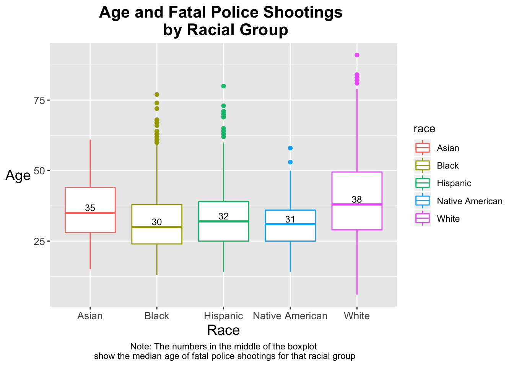
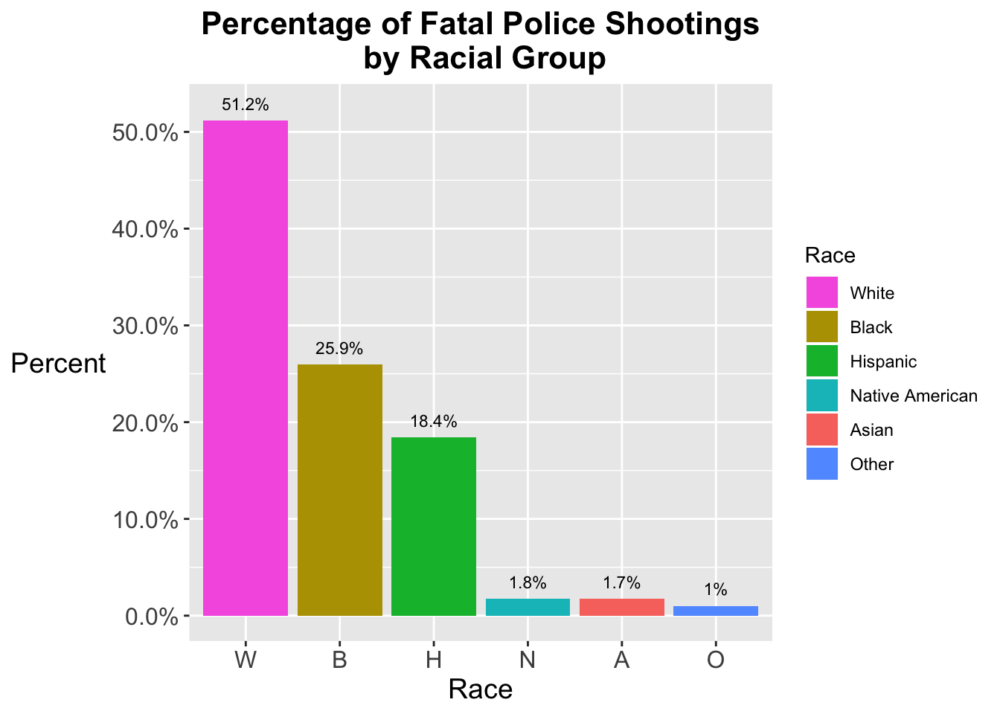
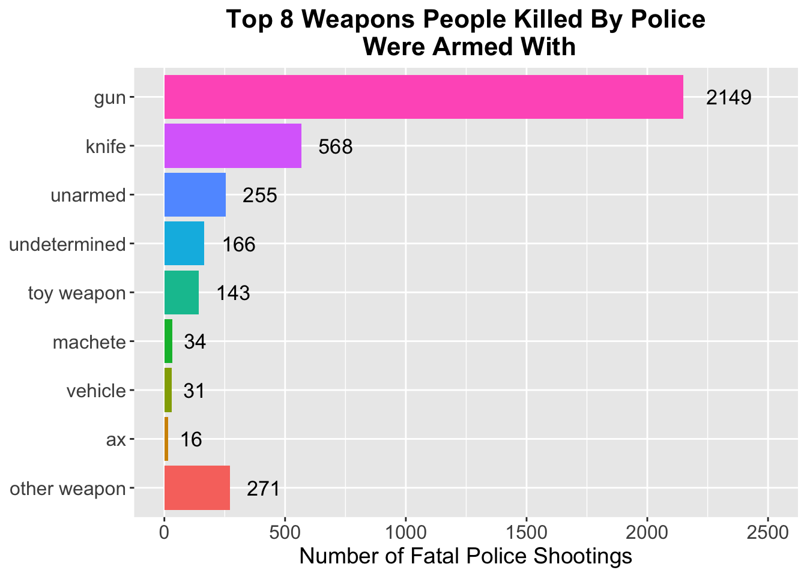

Analysis of The Problem
Group 21: Max Pabilonia and Madison Williams
Last updated on 2018-12-20
#Load Packages Here
library(readr)
library(tidyverse)
library(ggplot2)
library(stringr)
library(forcats)
library(scales)
#Do Data Wrangling Here
#Read in the police shootings dataset
police_shootings <- read_csv("fatal-police-shootings-data.csv")
#Make a dataset where the NA values are filtered out of the race column
police_shootings_race <- police_shootings %>%
filter(!is.na(race))
#Make a new dataset called police_shootings_clean that gets rid of NA results for race and age and changes the letter values for race into full words
police_shootings_clean <- police_shootings %>%
filter(!is.na(age)) %>%
filter(!is.na(race)) %>%
filter(race != "O") %>%
mutate(race = ifelse(race == "A", "Asian", race)) %>%
mutate(race = ifelse(race == "B", "Black", race)) %>%
mutate(race = ifelse(race == "N", "Native American", race)) %>%
mutate(race = ifelse(race == "W", "White", race)) %>%
mutate(race = ifelse(race == "H", "Hispanic", race))
#Create a dataset called police_shootings_armed that shows the top 10 weapons people were armed with and how many people were armed with those weapons when they were fatally shot
police_shootings_armed <- police_shootings %>%
mutate(armed_2 = ifelse((armed == "gun" | armed == "knife" | armed == "toy weapon" | armed == "unarmed" | armed == "undetermined" | armed == "unknown weapon" | armed == "machete" | armed == "ax" | armed == "vehicle"), armed, "other weapon")) %>%
group_by(armed_2) %>%
summarise(Number = n()) %>%
filter(!is.na(armed_2))Demographics of Fatal Police Shootings
The demographics of people fatally shot by police have led to social justice movements like Black Lives Matter1. What do victims of police brutality look like? We began by looking at the ages of each victim to see if citizens from a certain age group were more likely to get shot by police.
#Create a variable called p_meds that is the median age killed from each racial group
p_meds <- police_shootings_clean %>%
group_by(race) %>%
summarise(med = median(age))
#Create a boxplot of age and race and those killed in fatal police shootings
ggplot(police_shootings_clean, aes(x = race, y = age, color = race)) +
geom_boxplot() +
geom_text(data = p_meds, aes(x = race, y = med, label = med),
size = 3.20, vjust = -0.3, color = "black") +
ggtitle("Age and Fatal Police Shootings \n by Racial Group") +
theme(plot.title = element_text(hjust = 0.5), plot.caption = element_text(hjust = 0.5)) +
labs(y= "Age", x = "Race", fill = "Age", caption = "Note: The numbers in the middle of the boxplot\n show the median age of fatal police shootings for that racial group") +
theme(plot.title = element_text(hjust = 0.5, size = 16, face = "bold")) +
theme(axis.text = element_text(size=10)) +
theme(axis.title = element_text(size = 14)) +
theme(axis.title.y = element_text(angle = 360, vjust = 0.5)) +
scale_fill_discrete(name = "Race\n\n\n", labels = paste("Asian", "Black", "Hispanic", "Native American", "Other", "White"))
Age
Young people are more likely to be fatally shot by police. The majority of people fatally shot by police were under the age of 50. Unexpectedly, it seems that race also played a role in at what age groups are most at risk of being fatally shot by police. People of color were more likely to be shot at a younger age than white people. Are people of color more likely to be fatally shot by police in general?
#Create a dataset race_pct that lists the percentages of each race that make up civillians fatally shot by police
race_pct <- police_shootings_race %>%
group_by(race) %>%
summarise(count = n()) %>%
mutate(pct = count/sum(count))
#Plot those killed by police by race
ggplot(data = race_pct, mapping = aes(x = reorder(race, -pct), y = pct, fill = race)) +
geom_bar(stat="identity") +
geom_text(data= race_pct, aes(label=paste0(round(pct*100,1),"%"),
y=pct+0.012), size=3, vjust = 0.05) +
scale_y_continuous(labels = scales::percent) +
scale_fill_discrete(name = "Race",
breaks = c("W", "B", "H", "N", "A", "O"),
labels = c("White", "Black", "Hispanic", "Native American", "Asian", "Other")) +
ggtitle("Percentage of Fatal Police Shootings\n by Racial Group") +
theme(plot.title = element_text(hjust = 0.5, size = 16, face = "bold")) +
theme(axis.text = element_text(size=12)) +
theme(axis.title = element_text(size = 14)) +
theme(axis.title.y = element_text(angle = 360, vjust = 0.5)) +
labs(y= "Percent", x = "Race", fill = "Race")
Race
The majority of people fatally shot and killed by police were white citizens. Black citizens and Hispanic citizens were the second and third largest groups to be fatally shot. However, these numbers become more startling once you compare this bar graph to the racial makeup of the United States.

Racial Makeup of the United States. Source: U.S. Census Bureau
#Make new dataset police_shootings_armed with armed_2 being a new variable that only lists the top 8 weapons used and groups other weapons into a category called "other weapons"
police_shootings_armed <- police_shootings %>%
mutate(armed_2 = ifelse((armed == "gun" | armed == "knife" | armed == "toy weapon" | armed == "unarmed" | armed == "undetermined" | armed == "machete" | armed == "ax" | armed == "vehicle"), armed, "other weapon")) %>%
group_by(armed_2) %>%
summarise(Number = n()) %>%
filter(!is.na(armed_2))
#Create factor levels for the top 8 weapons that lists them in order of how often victims of fatal police shootings used them
police_shootings_armed$armed_2 <- factor(police_shootings_armed$armed_2,levels = c("other weapon", "ax", "vehicle", "machete", "toy weapon", "undetermined", "unarmed", "knife", "gun"))
#Plot the top 8 weapons people were armed with when they were fatally shot by police
ggplot(police_shootings_armed, aes(x = armed_2, y = Number, fill = armed_2)) +
geom_col() +
geom_text(aes(label = Number, hjust = -0.5, size = 3)) +
ggtitle("Top 8 Weapons People Killed By Police\n Were Armed With") + theme(plot.title = element_text(hjust = 0.5, size = 16, face = "bold")) +
theme(axis.text = element_text(size=12)) +
theme(axis.title = element_text(size = 14), axis.title.y = element_blank()) +
expand_limits(y=c(0, 2500)) +
theme(legend.position="none") +
labs(y= "Number of Fatal Police Shootings", fill = "Weapon") +
coord_flip()
Weapons
The majority of people who were armed at the time they were fatally shot were armed with a gun. Guns are deadly weapons, and in the minds of some, this could be a reasonable reason to fatally shoot someone if they are threatening you. However, there were also a notable number of people who were killed by police that were either unarmed or were armed with a toy weapon. These people were unlikely to injure police at the time they were killed.
It is clear that police brutality is a major problem in the United States. Too many unarmed people have been murdered by police. A disproportionate amount of these victims are people of color. It is important to train police officers in de-escalation practices so that they can rely on tools other than their guns to subdue an assailant.
Many police officers are taught to act as if they are going to constantly face violence from civilians on the job. However, statistics don’t back up this narrative. According to The Atlantic, violent attacks on police officers are extremely rare2.
It is possible to prevent fatal police shootings from occuring. In countries where fatalities perpetrated by police are the lowest in the world, police do not even carry guns in most situations, and only use them under special circumstances. Providing police officers with training on how to handle dangerous situations and supplying them with other tools besides guns such as racial bias training, de-escalation training, and non-lethal weapons, could make a real difference in preventing the needless traumatic deaths of civillians that are occuring every day.
Citizens should not be afraid to die at the hands of someone who is meant to protect them.
References and Citations
Black Lives Matter. “Black Lives Matter”, 2018, blacklivesmatter.com.
Edwards, Frank, and Michael H. Esposito. “Police Kill about 3 Men per Day in the US, According to New Study.” The Conversation, The Conversation, 11 Nov. 2018, theconversation.com/police-kill-about-3-men-per-day-in-the-us-according-to-new-study-100567.
Farbota, Kim. “Black Crime Rates: What Happens When Numbers Aren’t Neutral.” The Huffington Post, TheHuffingtonPost.com, 2 Sept. 2016, www.huffingtonpost.com/kim-farbota/black-crime-rates-your-st_b_8078586.html.
Lartey, Jamiles. “By the Numbers: US Police Kill More in Days than Other Countries Do in Years.” The Guardian, Guardian News and Media, 9 June 2015, www.theguardian.com/us-news/2015/jun/09/the-counted-police-killings-us-vs-other-countries.
Stoughton, Seth. “How Police Training Contributes to Avoidable Deaths.” The Atlantic, Atlantic Media Company, 12 Dec. 2014, www.theatlantic.com/national/archive/2014/12/police-gun-shooting-training-ferguson/383681/.
Sullivan, John, et al. “Fatal Police Shootings of Unarmed People Have Significantly Declined, Experts Say.” The Washington Post, WP Company, 7 May 2018, www.washingtonpost.com/investigations/fatal-police-shootings-of-unarmed-people-have-significantly-declined-experts-say/2018/05/03/d5eab374-4349-11e8-8569-26fda6b404c7_story.html?utm_term=.53f2394fd785.
Washingtonpost. “Washingtonpost/Data-Police-Shootings.” GitHub, github.com/washingtonpost/data-police-shootings/blob/master/fatal-police-shootings-data.csv.